swoole作为php的核心项目，php和swoole都具有一定的研究价值，由于是c语言编写的项目，要上手进行调试，那么最好用的调试工具就是gdb了
这个gdb调试工具功能强大，支持的选项也是非常多，下面就总结出来常用的命令
编译源码添加调试信息
在编译时把调试信息编译进生成的二进制文件中，需要给gcc编译器加上-g参数，比如编译php的Makefile中是这样的

加上-g参数就已经有调试信息了，-O0是关闭gcc的优化，这个gcc优化后会在调试时丢失一部分调试信息，所以一般建议关闭
这样在gdb里面就可以随时查看当前执行到源码的那个地方了，能够显著提升调试的效率
查看源码
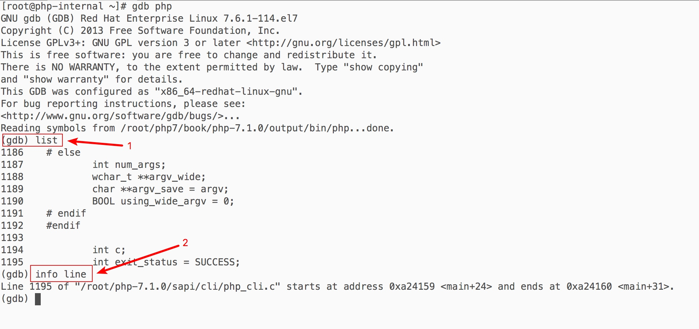
使用gdb php开始启动gdb调试php命令行程序
使用list命令，默认会定位到main方法所在的第一行被执行的代码，可以看到定位到了1186行，使用info line指令可以查看上面定位到的代码所在的文件是"sapi/cli/php_cli.c"
在understand中打开php源码进行验证
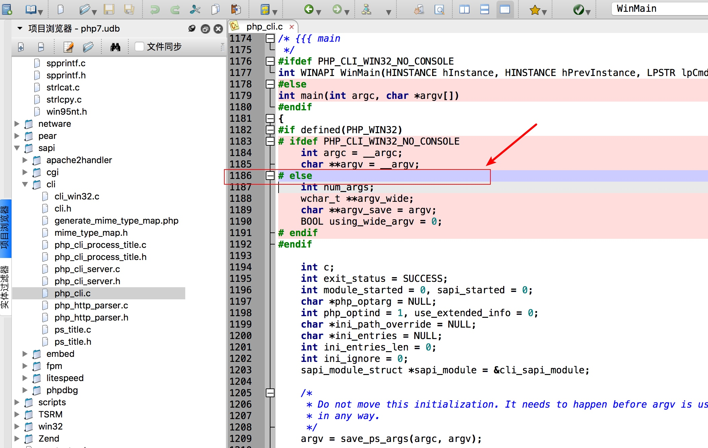
因为是在linux下运行的，所以这个"PHP_CLI_WIN32_NO_CONSOLE"宏是不存在，第一行代码是走到1186行的else分支是ok的，这就说明了gdblist命令默认是定位到main方法的了
断点操作
打断点
使用b命令，或者全名break命令可以在任意函数开始位置进行断点，比如c/c++的入口函数main处断点，只需执行下面的命令就可以了
b main
操作效果如下
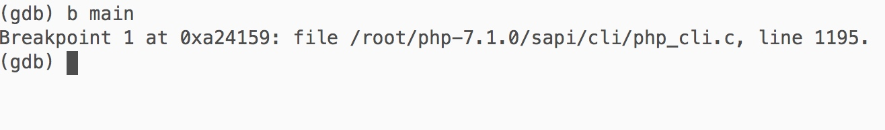
这样断点就加好了，运行php时就会在main方法处触发这个断点了
查看已有断点
使用命令info b或者info break就可以查看目前所有的断点了，效果如下
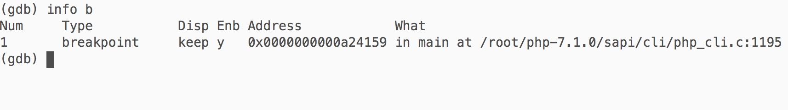
在sapi/cli/php_cli.c:1284处再加个断点
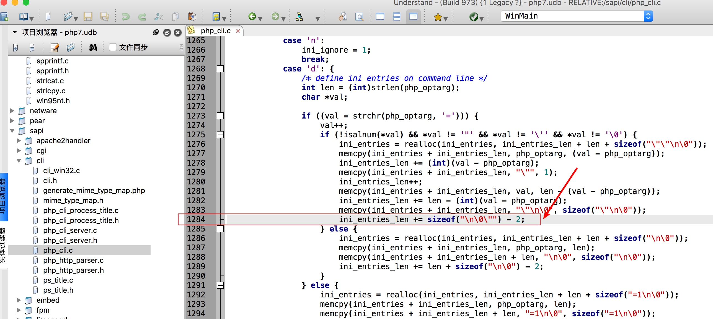
效果如下：
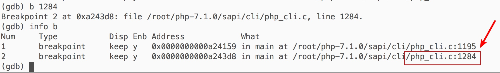
可以看到断点已经成功加上了
删除断点
使用命令delete breakpoints 断点编号就可以删除断点了，这个可以自行研究
其它断点操作
这个断点操作的命令还有非常多，可以使用命令help breakpoints查看完整的断点相关的命令清单
流程控制
使用r命令或者run命令就是启动这个被调试的php程序了，比如调试这个php命令：php test.php
<?php
// test.php
$a = '1';
echo $a;
上面这个命令是带了参数 test.php所以，在gdb里运行时也可以把这个参数带上，对应的gdb命令如下
run test.php
查看操作效果：
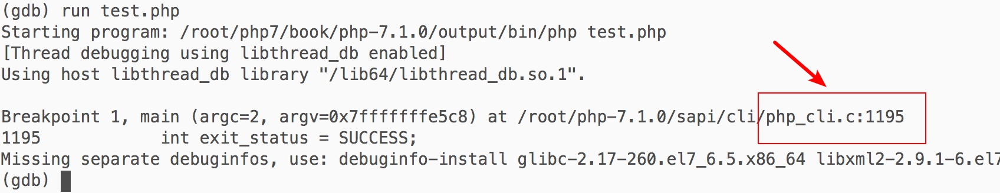
可以看到成功命中了设置在1195行的断点，这个说明在gdb里启动php成功了
获取调试信息
获取反汇编代码-layout模式
使用命令layout asm可以查看当前断点所处位置的反汇编代码，这个在高级分析时会经常用到，效果如下：
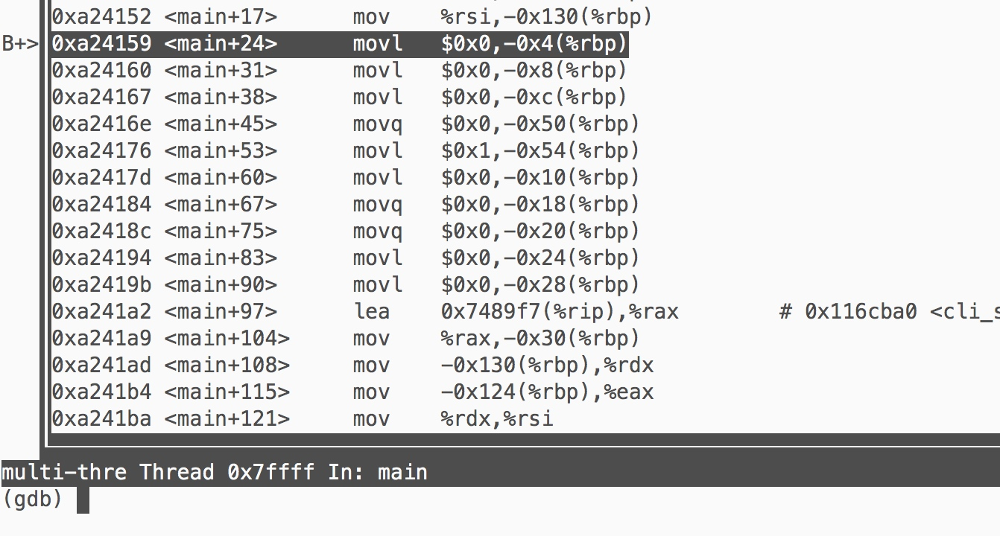
命令layout src可以切换到源码视图，这个视图查看源码非常方便
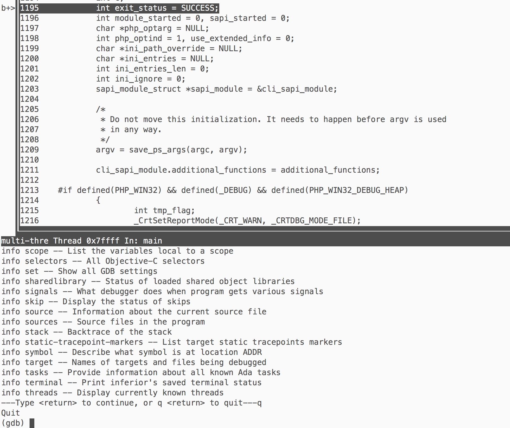
结合使用layout asm可以实时对比汇编代码和c代码，有利于快速对比分析
使用这个ctrl + x + a命令可以退出这个layout模式
获取反汇编代码-普通模式
上面使用layout模式查看汇编代码，但是会打开新窗口，如果只想查看当前断点下面几行汇编，可以使用更快的diaplay命令，比如查看断点下的10行反汇编代码使用命令display/10i $pc，查看效果如下：
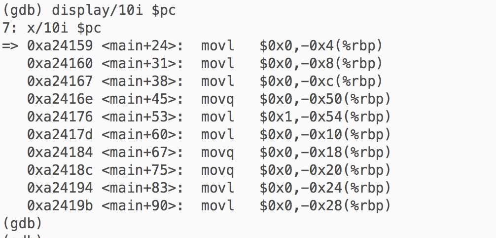
但是这个display每次断点都会输出，可以使用undisplay命令进行删除
获取变量值
在gdb中可以很方便的使用p命令或者print命令来获取当前断点所处的上下文的变量的值
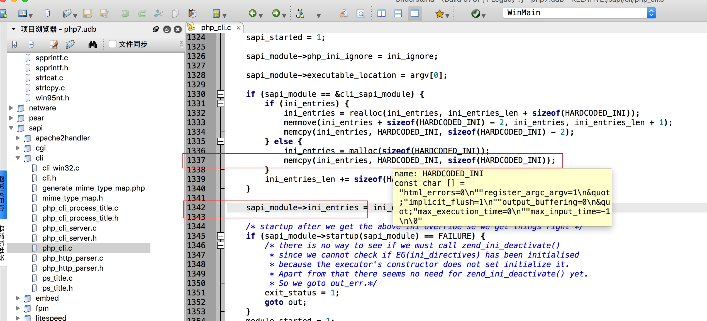
然后在这个1342处进行断点，在1337处复制了一段字符串给ini_entries, 所以1342处ini_entries肯定有值了
然后使用命令p ini_entries查看ini_entries变量中的值
操作效果如下
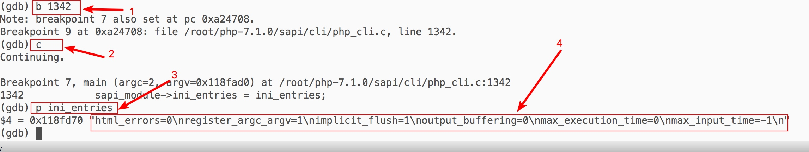
成功的获取到了ini_entries变量中的值是字符串
"html_errors=0\nregister_argc_argv=1\nimplicit_flush=1\noutput_buffering=0\nmax_execution_time=0\nmax_input_time=-1\n"
调试swoole
编写swoole协程测试代码
// go.php
<?php
go(function () {
$a = '1';
echo $a;
});
echo '2';
比如在创建协程核心函数处断点
b zif_swoole_coroutine_create
然后带swoole扩展运行: run -dextension=swoole.so go.php
操作效果如下
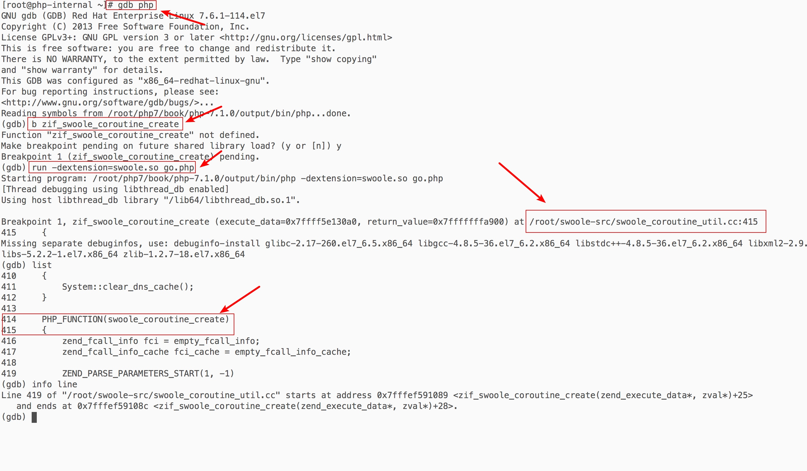
可以看到程序已经在swoole的swoole_coroutine_create成功断点了
然后就可以使用gdb对swoole进行调试了
同时也可以看到断点时断在了swoole-src/swoole_coroutine_util.cc:415行，可以在understand中核对代码是否一致
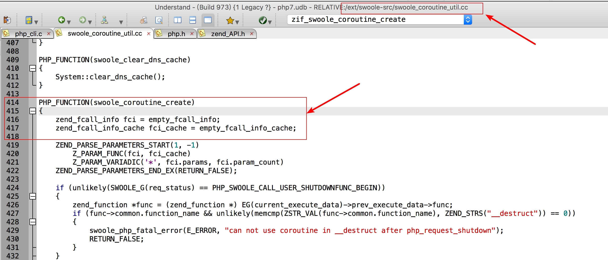
可以看到在understand中代码位置是ok的，这样就可以在gdb里调试，在understand里阅读源代码了😃
参考资料
- PHP 7底层设计与源码实现 (Web开发技术丛书)
- PHP7内核剖析
- Useful_commands_gdb
- 【Swoole源码研究】深入理解Swoole协程实现
- Understand
- GDB cheat sheet
一些注意的点
使用c命令或者continue命令可以让程序执行到下一个断点处
调试带宏的函数，需要把宏展开获取完整的函数名，才能下断点
编译swoole扩展时需要附加上调试信息，通过参数--enable-debug实现
cd swoole-src
phpize
./configure --enable-debug